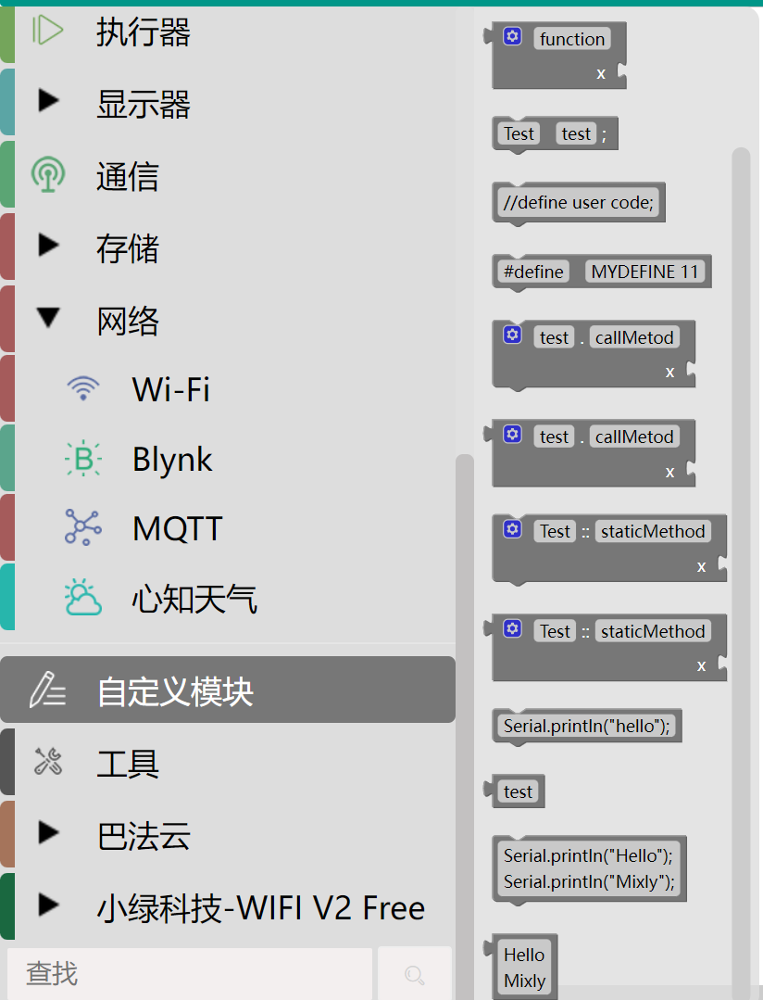

前言
目录
项目简介
本实践指南将带领您从零开始构建一个基于ESP32的智能网球捡拾小车系统。通过本项目的完整学习路径，您将掌握嵌入式开发、物联网通信、计算机视觉和智能控制等多项前沿技术。（编写中）
学习路径
基础准备
- 环境配置：硬件平台介绍与开发环境搭建
- 预备知识：嵌入式开发基础与ESP32编程入门
核心技能培养
-
基础控制
- ESP32 GPIO控制与电机驱动
- 实现小车基本运动控制
-
物联网应用
- WiFi通信与网络服务搭建
- 网页远程控制实现
-
机械控制
- PWM技术与舵机控制
- 机械抓手精准控制
-
计算机视觉
- YOLO模型训练与部署
- 目标检测与位置识别
进阶项目实践
- 边缘智能系统：实现自动网球检测与抓取全流程
- Rust开发实践：使用Rust进行嵌入式开发
- Unikernel探索：移植ArceOS驱动系统
- AI增强：视觉大模型与语音交互应用
技术亮点
- 从硬件驱动到智能算法的完整开发链条
- 物联网与边缘计算的深度融合
- 传统嵌入式开发与现代AI技术的结合
- 多种编程范式与实践(Rust/Unikernel)
适合读者
- 嵌入式开发爱好者
- 物联网应用开发者
- 计算机视觉实践者
- 希望提升完整项目开发能力的学习者
通过本项目的阶梯式实践，您将获得从硬件控制到智能识别算法的全栈开发能力，掌握现代嵌入式智能系统的开发方法。
序章：环境配置与预备知识
目录
- * 硬件平台介绍
- 0.1.1 开发板选型指南
(a)核心硬件架构
(b)外设与接口资源 - 0.1.2 电机驱动模块选型
- 0.1.1 开发板选型指南
- * 开发环境准备
- 0.2.1 运行环境
- 0.2.2 相关库的下载与简要介绍
(a)ESPAsyncWebServer
(b)LedController
(c)ESP32Servo
- 前置知识引导
- 0.3.1 与Arduino开发相关的语法介绍
(a)基础语法架构
(b)相关库中核心函数的介绍 - 0.3.2 PWM基本原理
- 0.3.1 与Arduino开发相关的语法介绍
预期学习成果
- 硬件层面：
了解ESP32相关知识，完成项目所需硬件选购（开发板，小车，抓手，电池） - 开发环境层面：
掌握VSCode下PlatformIO插件的基础使用方法
0.1 硬件平台介绍
ESP32开发板硬件平台详解
ESP32作为一款功能强大的物联网微控制器，凭借其双核处理器、Wi-Fi/蓝牙双模通信和丰富的外设接口，成为智能小车开发的理想选择。本章将全面解析ESP32小车的硬件平台构成，包括开发板选型、电机驱动模块选择和电源系统设计，为后续开发奠定坚实基础。
0.1.1 开发板选型指南

- 一、核心硬件架构
- 1.处理器系统：
双核Xtensa® 32位LX6微处理器架构
支持80MHz至240MHz动态时钟频率调节
448KB ROM用于系统启动和基础功能
520KB SRAM用于程序运行
16KB RTC SRAM用于低功耗模式数据保持 - 2.无线通信能力:
（1）Wi-Fi：
支持802.11 b/g/n协议，2.4GHz频段，最高150Mbps速率
支持A-MPDU和A-MSDU聚合
0.4μs保护间隔优化
（2）蓝牙：
双模支持
经典蓝牙4.2(BR/EDR)
低功耗蓝牙(BLE) - 3.存储配置：
默认集成4MB SPI Flash(可选8MB/16MB版本)
部分型号额外集成2MB PSRAM(ESP32-D0WDR2-V3芯片)
- 1.处理器系统：
- 二、外设与接口资源
- 1.GPIO系统：
（1）共38个物理引脚
（2）26个全功能GPIO
（3）支持多种功能复用(详见后续章节) - 2.通信接口：
4×SPI(支持主/从模式)
2×I²C(支持主/从模式)
3×UART(含1×USB-OTG)
I²S音频接口
CAN 2.0控制器
以太网MAC接口
- 1.GPIO系统：
0.1.2 电机驱动模块选型
- 要点：
- 电压匹配：确保驱动模块支持电池电压
- 电流余量：电机堵转电流应小于驱动峰值电流的80%
- 控制方式：PWM
0.2 开发环境准备
0.2.1 运行环境
基础运行环境可以参考如下网址 使用VSCode+PlatformIO插件搭建开发环境： https://blog.csdn.net/msdcp/article/details/127033151 https://blog.csdn.net/jiladahe1997/article/details/108270620
0.2.2 相关库的下载与介绍
- 一、ESPAsyncWebServer
- ESPAsyncWebServer是PlatformIO环境下ESP32开发中极为重要的异步Web服务器库，它为物联网设备提供了高性能的网络通信能力。
- 1.异步网络架构:
非阻塞式处理：采用事件驱动模型，服务器在处理请求时不会阻塞其他连接，能够同时处理多个客户端请求，显著提高吞吐量;
高效资源利用：在等待I/O操作(如文件读取、传感器数据采集)时，可以继续处理其他任务，减少CPU闲置时间;
实时响应机制：基于回调函数的事件处理方式，确保对客户端请求的快速响应，特别适合实时数据推送场景. - 2.协议支持能力:
支持GET、POST、PUT、DELETE、PATCH、HEAD和OPTIONS等HTTP方法
- 二、LedController
- LEDController库是ESP32平台上用于控制LED和生成PWM信号的重要工具库，本项目中主要使用的是LEDController库中与PWM相关的核心函数（详见后续语法介绍）。
- 三、ESP32Servo
- ESP32Servo库是专为ESP32系列微控制器设计的舵机控制库，它提供了简单易用的接口来控制标准舵机。具体包括基础控制功能，对多个舵机独立管理控制；运动控制功能，控制舵机角度、平滑运动等；状态查询功能，获取当前位置以及PWM通道查询等。
0.3 前置知识引导
与Arduino开发相关的语法介绍
- 一、基础语法架构
void setup() { // 初始化代码，只执行一次}void loop() { // 主循环代码，重复执行}Serial.begin(115200); // 初始化串口，波特率115200Serial.print() // 发送数据到串口 - 二、相关库中核心函数的介绍
- LedController
(1)ledcSetup() - PWM通道初始化double ledcSetup(uint8_t chan, double freq, uint8_t bit_num)
i.功能：配置指定LEDC通道的PWM信号参数
ii.参数：
chan：通道号(0-15，取决于ESP32型号)
freq：PWM频率(Hz)
bit_num：占空比分辨率(1-16位)
返回值：实际设置的频率值
iii.说明：必须先调用此函数初始化通道才能使用其他PWM功能
(2)ledcAttachPin() - 引脚绑定void ledcAttachPin(uint8_t pin, uint8_t chan)
i.功能：将GPIO引脚绑定到指定的PWM通道
ii.参数：
pin：GPIO引脚号
chan：已初始化的PWM通道号
iii.说明：一个通道可绑定多个引脚，实现同步控制
(3)ledcWrite() - 占空比设置void ledcWrite(uint8_t chan, uint32_t duty)
i.功能：设置指定通道的PWM占空比
ii.参数：
chan：PWM通道号
duty：占空比值(范围由分辨率决定)
iii.说明：这是最核心的PWM输出函数，用于实时调整输出强度
- LedController
PWM原理与占空比计算
- PWM基本原理
- 1.核心概念
脉冲信号：由高电平和低电平交替组成的方波信号
周期(T)：一个完整PWM波形的时间长度（单位：秒）
频率(f)：单位时间内周期数，f=1/T（单位：Hz）
脉宽(高电平时间)：一个周期内信号保持高电平的时间
占空比(D)：高电平时间与周期的比值，D = (高电平时间/T) × 100% - 2.工作原理
PWM基于面积等效原理：冲量（脉冲面积）相等而形状不同的窄脉冲加在具有惯性的环节上时，其效果基本相同。
通过改变占空比来调节平均输出电压：
占空比越大 → 平均电压越高
占空比越小 → 平均电压越低
- 1.核心概念
第一章：ESP32小车基本控制
目录
- 硬件介绍
- 1.1.1 ESP32核心引脚
- 1.1.2 ESP32开发板的基本功能
- ESP32使用I/O接口
- 1.2.1 数字I/O的不同工作模式介绍
- 1.2.2 Arduino框架
- ESP32驱动轮子
- 1.3.1 硬件连接
(a)引脚连接参考 - 1.3.1 相关函数的编写
(a)电机控制函数 - 1.3.2 串口连接与烧录
(a)调试方法
(b)常见问题解决 - 1.3.3 预期实现成果展示
- 1.3.1 硬件连接
- 项目实践：ESP32驱动小车转向
- 1.4.1 提示
- 1.4.2 预期实现成果
预期学习成果
- 能够依照实例编写出相关控制小车运动的函数
- 小车能够实现前进、后退、转向、刹车、休眠等多种运动效果
硬件介绍
ESP32核心引脚
-
一、电源管理引脚
-
1.VCC：3.3V电源输入端子，为整个芯片提供工作电压
-
2.GND：接地端子，与电源负极相连
-
3.EN：使能控制管脚，高电平激活芯片工作状态，低电平触发重启
-
-
二、通信接口引脚
-
1.UART接口
TXD/RXD：串行数据发送/接收管脚
RTS/CTS：硬件流控信号线，用于控制传输速率 -
2.I2C接口
SDA/SCL：两线式同步串行总线的数据线和时钟线
-
-
三、特殊功能引脚
-
1.ADC/DAC引脚
(1)ADC输入：18个12位ADC通道(实际可用6-8个)
ADC1：GPIO1-8(部分不可用)
ADC2：GPIO9-17(使用Wi-Fi时不可用)
(2)DAC输出：GPIO25(DAC1)、GPIO26(DAC2)，8位分辨率 -
2.PWM输出
支持16个PWM通道，几乎所有输出引脚都可配置为PWM
-
ESP32开发板的基本功能
-
一、核心处理能力
- 双核处理器：
(1)搭载Xtensa® LX6双核32位MCU，主频高达240MHz，支持并行任务处理（如一个核心处理无线协议栈，另一个运行用户程序）。
(2)支持硬件浮点运算单元（FPU），适合复杂算法（如语音识别、机器学习）
- 双核处理器：
-
二、无线通信功能
- WiFi连接:
支持802.11 b/g/n协议（2.4GHz），传输速率达150Mbps，提供STA（客户端）、AP（热点）或混合模式
- WiFi连接:
-
三、外设接口
- GPIO与PWM:
最多34个可编程GPIO（部分型号如ESP32-P4达55个），支持输入/输出、中断和PWM控制（如LED调光、舵机驱动）
- GPIO与PWM:
ESP32使用I/O接口
数字I/O的不同工作模式介绍

-
一、基本输入输出模式
-
1.数字输入模式(INPUT)
用于读取外部数字信号状态(高/低电平) -
2.数字输出模式(OUTPUT)
控制引脚输出高/低电平
-
-
二、带内部电阻的输入模式
-
1.上拉输入模式(INPUT_PULLUP)
(1)功能：
启用内部上拉电阻(约45kΩ)的输入模式
(2)特点：
引脚悬空时默认读取为高电平
适合连接接地式开关/按键
可节省外部上拉电阻 -
2.下拉输入模式(INPUT_PULLDOWN)
(1)功能：
启用内部下拉电阻(约45kΩ)的输入模式
(2)特点：
引脚悬空时默认读取为低电平
适合连接接电源式开关/按键
可节省外部下拉电阻
-
Arduino框架
-
一、必要头函数/库
-
1.Arduino
核心库，包括GPIO基础函数 -
2.LedConctroller
将控制GPIO的基础函数替换，如下
//Aruino pinMode(pin, mode); // 配置引脚为输入或输出模式 digitalWrite(pin, value); // 设置输出电平（HIGH/LOW）//LedController //介绍详见上一章 ledcSetup(uint8_t chan, double freq, uint8_t bit_num); ledcAttachPin(uint8_t pin, uint8_t chan); edcWrite(uint8_t chan, uint32_t duty); -
-
二、代码样例
#include <Arduino.h>
void Motor_Setup(int motorID, int pin1,
int pin2) { // 电机初始化 ID=1~4 定义四组电机
ledcSetup(motorID * 2 - 2, freq, resolution_bits);
ledcAttachPin(pin1, motorID * 2 - 2);
ledcSetup(motorID * 2 - 1, freq, resolution_bits);
ledcAttachPin(pin2, motorID * 2 - 1);
}
void setup() {
delay(500);
Serial.begin(115200);
Motor_Setup(1, 27, 13); // 设电机组标号和对应的引脚
Motor_Setup(2, 4, 2);
Motor_Setup(3, 17, 12);
Motor_Setup(4, 15, 14);
}
void loop() {
delay(1000);
}
ESP32驱动轮子
硬件的连接
-
引脚连接参考
- 电机1 PWM: GPIO27
电机1 DIR: GPIO13
电机2 PWM: GPIO4
电机2 DIR: GPIO2
电机3 PWM: GPIO17
电机3 DIR: GPIO12
电机4 PWM: GPIO15
电机4 DIR: GPIO14
- 电机1 PWM: GPIO27
相关函数的编写
-
电机控制函数
-
速度控制函数
依照ledcWrite()函数相关功能进行编写 -
代码样例
void Motor_Speed(int motorID, int speed) { // 电机速度设置 // ID=1~4,speed=-255~255 if (speed == 0) { ledcWrite(motorID * 2 - 2, 0); ledcWrite(motorID * 2 - 1, 0); } else if (speed > 0) { ledcWrite(motorID * 2 - 2, speed); ledcWrite(motorID * 2 - 1, 0); } else { ledcWrite(motorID * 2 - 2, 0); ledcWrite(motorID * 2 - 1, -speed); } } //其中motorID * 2 - 2对应的是PWM通道，设置为从0开始 -
串口调试与烧录
-
一、调试方法
-
PlatformIO提供了方便的串口监视器：
点击底部状态栏"插头"图标
或命令面板输入"PlatformIO: Serial Monitor"
快捷键Ctrl+T Ctrl+X退出监视器 -
可以在代码中添加Serial.println()函数增加调试信息
-
-
二、常见问题解决
-
1.上传失败:
检查USB连接 -
2.库冲突:
去除非必要的库，避免引起冲突 -
3.电机响应异常：
检查电源是否充足
检查PWM频率和分辨率
-
预期实现成果展示
项目实践：ESP32驱动小车转向
提示
- 差速转向
- 刹车与休眠的区别
预期实现成果
第二章：ESP32小车远程控制
目录
- ESP32使能WiFi
- 2.1.1 ESP32的WiFi板块函数的介绍
- 2.1.2 WiFi板块基本代码架构
- ESP32搭建网络服务
- 2.2.1 网页搭建简单介绍
- 2.2.2 网页搭建基本代码架构
- 2.2.3 预期实现成果
- 网页遥控小车前进
- 2.3.1 控制运动板块与WiFi、网页搭建等板块的结合
- 2.3.2 预期实现成果
- 项目实践：网页控制小车
- 2.4.1 提示
- 2.4.2 预期实现成果
预期学习成果
- ESP32能够连接WiFi并返回一些内容
- 能够搭建出包含控制小车运动按钮的简单网页
- 网页可以遥控小车实现多种运动效果，包括前进、后退、左转向、右转向、刹车等。
ESP32使能WiFi
ESP32的WiFi板块函数的介绍
-
基础WiFi连接函数
-
1.WiFi初始化与连接
(1)WiFi.begin() - 用于连接到指定的WiFi网络WiFi.begin(ssid, password); // 连接到指定SSID和密码的WiFi网络
(2)WiFi.status() - 返回当前WiFi连接状态wl_status_t status = WiFi.status();
常见返回值：
WL_CONNECTED: 已连接(值为3)
WL_NO_SSID_AVAIL: 未找到指定网络(值为1)
WL_CONNECT_FAILED: 连接失败(值为4)
WL_IDLE_STATUS: WiFi处于空闲状态(值为0)
WL_DISCONNECTED: 未连接(值为6) -
2.网络信息获取
WiFi.localIP() - 获取ESP32在局域网中的IP地址IPAddress ip = WiFi.localIP();Serial.println(ip); // 打印IP地址如"192.168.1.100"
-
WiFi板块基本代码架构
-
一、初始化
- 配置模块的工作模式
WiFi.mode(WIFI_STA);
- 配置模块的工作模式
-
二、准备步骤
- 指定需要连接的WiFi
WiFi.begin(ssid, password);
- 指定需要连接的WiFi
-
三、连接WiFi+打印ip地址
while (WiFi.status() != WL_CONNECTED) { delay(500); Serial.print("."); } Serial.println("\nIP地址: " + WiFi.localIP().toString()); -
四、代码示例
void Setup(){
Serial.begin(115200);
WiFi.mode(WIFI_STA);
WiFi.begin(ssid, password);
while (WiFi.status() != WL_CONNECTED) {
delay(500);
Serial.print(".");
}
Serial.println("\nIP地址: " + WiFi.localIP().toString());
}
void loop() {
}ESP32搭建网络服务
网页搭建简单介绍
- ESP32可以搭建简单的Web服务器，通过浏览器访问ESP32的IP地址即可获取响应
网页搭建基本代码架构
-
必要头函数
#include <ESPAsyncWebServer.h> -
HTML页面嵌入方式
直接字符串嵌入：适合简单页面const char index_html[]PROGMEM=R"rawliteral(<html><body><h1>ESP32 Control Panel</h1><button onclick="fetch('/led?state=1')">Turn ON</button></body></html>)rawliteral"; -
代码样例
const char* webpage = "<!DOCTYPE html><html lang=\"zh-CN\"><head><meta charset=\"UTF-8\"><meta name=\"viewport\" content=\"width=device-width,initial-scale=1.0\"><title>小车控制面板</title><style>body{font-family:Arial,sans-serif;background:#f0f2f5;display:flex;flex-direction:column;align-items:center;justify-content:center;height:100vh;margin:0;padding:20px;}.container{background:#fff;border-radius:15px;box-shadow:0 10px 25px rgba(0,0,0,0.1);padding:30px;width:100%;max-width:400px;text-align:center;}h1{color:#333;margin-bottom:30px;}.control-section{margin-bottom:30px;}.direction-pad{display:grid;grid-template-columns:repeat(3,1fr);gap:10px;margin-bottom:20px;}.btn{background:#4a6fa5;color:#fff;border:none;border-radius:8px;padding:15px;font-size:16px;cursor:pointer;transition:all 0.3s;box-shadow:0 4px 6px rgba(0,0,0,0.1);}.btn:hover{background:#3a5a80;transform:translateY(-2px);box-shadow:0 6px 8px rgba(0,0,0,0.15);}.btn:active{transform:translateY(0);box-shadow:0 2px 4px rgba(0,0,0,0.1);}.btn-up{grid-column:2;}.btn-left{grid-column:1;grid-row:2;}.btn-stop{grid-column:2;grid-row:2;background:#d9534f;}.btn-right{grid-column:3;grid-row:2;}.btn-down{grid-column:2;grid-row:3;}.arm-control{display:flex;justify-content:space-around;margin-top:20px;}.btn-grab{background:#5cb85c;}.btn-release{background:#d9534f;}.btn-reset{background:#f0ad4e;}.btn-grab:hover{background:#4cae4c;}.btn-release:hover{background:#c9302c;}.btn-reset:hover{background:#ec971f;}</style></head><body><div class=\"container\"><h1>小车控制面板</h1><div class=\"control-section\"><h2>方向控制</h2><div class=\"direction-pad\"><button class=\"btn btn-up\" onclick=\"sendCommand('up')\">↑</button><button class=\"btn btn-left\" onclick=\"sendCommand('left')\">←</button><button class=\"btn btn-stop\" onclick=\"sendCommand('stop')\">STOP</button><button class=\"btn btn-right\" onclick=\"sendCommand('right')\">→</button><button class=\"btn btn-down\" onclick=\"sendCommand('down')\">↓</button></div></div><div class=\"control-section\"><h2>机械臂控制</h2><div class=\"arm-control\"><button class=\"btn btn-grab\" onclick=\"sendCommand('grab')\">抓取</button><button class=\"btn btn-reset\" onclick=\"sendCommand('reset')\">复原</button><button class=\"btn btn-release\" onclick=\"sendCommand('release')\">放下</button></div></div></div><script>function sendCommand(a){fetch('/control?action='+a).then(r=>{if(!r.ok)console.error('请求失败')}).catch(e=>console.error('请求错误:',e));}document.addEventListener('keydown',e=>{const k={ArrowUp:'up',ArrowLeft:'left',ArrowRight:'right',ArrowDown:'down',g:'grab',r:'release',s:'stop',t:'reset'}[e.key];if(k)sendCommand(k);});</script></body></html>";
-
代码解析
-
1.基本结构
这是一个完整的HTML5页面，包含<!DOCTYPE>声明、中文字符集(UTF-8)和响应式视口设置。
页面分为两个控制区：
(1)方向控制：通过5个按钮（上、下、左、右、停止）发送指令。
(2)机械臂控制：通过3个按钮（抓取、复原、放下）发送指令。 -
2.核心交互逻辑
(1)按钮通过onclick事件调用sendCommand()函数，发送HTTP GET请求到ESP32的/control端点，例如：fetch('/control?action=up') // 发送"up"指令
(2)支持键盘快捷键（方向键对应方向控制，g/r/s/t对应机械臂操作）。 -
3.样式设计
使用CSS Flex/Grid布局实现响应式按钮排列。
按钮有悬停/点击动画效果，不同功能按钮通过颜色区分（如红色表示停止）。 -
4.优化
换行符问题:
原始代码中包含换行符（\n）和缩进，会增加字符串长度，可能超出ESP32的存储限制（尤其是Flash或NVS分区容量）。
换行符在不同系统中可能为\n（Unix）或\r\n（Windows），需统一处理。
-
预期实现成果
网页遥控小车前进
控制运动板块与WiFi、网页搭建等板块的结合
-
使用AsyncWebServer中on函数接收网页相关指令
-
这里使用的是GET请求
server.on("/led", HTTP_GET, [](AsyncWebServerRequest *request){ String state = request->getParam("state")->value(); digitalWrite(LED_PIN, state.toInt()); request->send(200);}); -
通过以下方法对应控制运动相关函数：
request->getParam("state")->value() -
代码样例
const char* webpage = "";//自己编写的网页
AsyncWebServer server(80);
const char* ssid = "Tsinghua-Dongsheng";
const char* password = "";
void notFound(AsyncWebServerRequest *request) {
request->send(404, "text/plain", "Not found");
}
预期实现成果
项目实践：网页控制小车
提示
- 完善网页中的按钮，使每个运动状态都有所对应
- 根据网页遥控小车前进照猫画虎
预期实现成果
第三章：ESP32机械抓手基本控制
目录
- 3.1.1 使用PWM控制舵机的语法基本框架
(a)初始化与绑定通道
(b)编写控制舵机角度函数
(c)对多个电机进行控制，实现对抓手运动状态控制
(d)代码样例
- 3.2.1 舵机信号脉宽映射与角度控制
(a)舵机控制原理
(b)角度到脉宽的转换公式
(c)代码样例
预期学习成果
- 能够控制多个舵机转动
- 抓手能呈现抓、放等预计姿态
- 网页端可以遥控抓手进行抓球
ESP32使用PWM
使用PWM控制舵机的语法基本框架
-
一、初始化与绑定通道
- 主要使用函数
ledcSetup(PWM_CHANNEL, PWM_FREQ, PWM_RESOLUTION);ledcAttachPin(SERVO_PIN, PWM_CHANNEL);
- 主要使用函数
-
二、编写控制舵机角度函数
-
利用角度、脉宽、分辨率之间的关系编写
-
使用
ledcWrite(PWM_CHANNEL, duty);
进行输出
-
-
三、对多个电机进行控制，实现对抓手运动状态控制
- 根据舵机实际情况，编写能实现抓手初始状态、抓物状态、缩回状态、释放状态等的各种函数
-
四、代码样例
void Servo_Setup(){
ledcSetup(PWM_CHANNEL_1, PWM_FREQ, PWM_RESOLUTION);
ledcAttachPin(SERVO_PIN_1, PWM_CHANNEL_1);
ledcSetup(PWM_CHANNEL_2, PWM_FREQ, PWM_RESOLUTION);
ledcAttachPin(SERVO_PIN_2, PWM_CHANNEL_2);
ledcSetup(PWM_CHANNEL_3, PWM_FREQ, PWM_RESOLUTION);
ledcAttachPin(SERVO_PIN_3, PWM_CHANNEL_3);
}
void setAngle(int servoNum, int angle) {
angle = constrain(angle, 0, 180); // 限制角度范围
//duty,angle与pulseWidth的关系见后一节
ledcWrite(servoNum, duty);
}ESP32驱动舵机
舵机信号脉宽映射与角度控制
- 一、舵机控制原理
以下是所使用舵机的PWM脉宽范围

- 二、角度、分辨率、脉宽的转换公式
-
1.分辨率与脉宽的转换公式：
duty = (pulseWidth / 20000) × (2^duty_max - 1)
例如，分辨率为16位，0.5ms脉冲宽度对应的duty值即为(500/20000)×65535=1638 -
2.角度和脉宽的转换公式：
angle = (pulseWidth_us - 500) × (180 / (2500 - 500)) -
由上述两个公式即可推导出角度和分辨率之间的关系
- 三、代码样例
void setAngle(int servoNum, int angle) {
angle = constrain(angle, 0, 180); // 限制角度范围
float pulseWidth = 500 + angle * (2000.0 / 180.0); // 精确到11.111μs/°// 绝对值映射
uint32_t duty = (uint32_t)((pulseWidth / 20000.0) * 65535 + 0.5); // 四舍五入
ledcWrite(servoNum, duty);
}项目实践：ESP32抓取网球
提示
- 根据实际抓手各部分组装方式调整舵机角度
- 在角度函数中增加while循环和delay()控制抓手速度
预期实现成果
第四章：YOLO模型训练及识别
网球识别
ESP32小车识别
项目实践：网球和ESP32小车位置识别
第五章：项目实践-边缘智能目标检测
里程碑1：根据YOLO结果返回控制小车指令
里程碑2：根据小车指令转向瞄准网球
里程碑3：根据小车指令靠近网球
里程碑4：根据小车指令抓取网球
第六章：项目实践-使用Rust库开发ESP32小车
第七章：项目实践-移植ArceOS Unikernel驱动小车
第八章：项目实践-基于视觉大模型捡网球
第九章：项目实践-通过语音交互实现捡万物
第十章：项目实践-通过语音交互实现分类存放
第十一章：mixly下对ESP32控制的复现
目录
-
-
11.1.1 Mixly安装教程
-
11.1.2 Mixly使用方法
-
-
-
11.2.1 Mixly界面不同分区简要介绍
-
11.2.2 基础模块区和库模块区使用方法
-
-
-
11.3.1 驱动电机、舵机部分
-
11.3.2 连接WiFi、发送指令部分
-
预期学习成果
可以使用Mixly对代码进行复现，控制小车实现前进、后退、左转、右转、刹车以及机械臂的抓取、释放、复位等形态
Mixly安装与使用
Mixly安装教程
- 官网下载
https://mixly.cn/bnu-maker/mixl2.0rc
跳转百度网盘后，点击Mixly2.0文件夹，显示以下文件:
下载完之后，将文件解压，解压的目录不要有中文、空格等；安装目录不要太长，目录最好放到每个电脑盘的根目录。 打开解压后的文件夹，请双击"一键更新.bat"文件，按照提示安装，在此不做详细描述。等安装完成，双击“Mixly.exe”打开Mixly软件，如下图：
Mixly使用方法
打开界面后，找到并选择Arduino ESP32

之后关注界面右上角，打开导入窗口。点击右上角”设置“按钮，选择”管理库“。如下图：
https://emakefun.github.io/emakefun-docsify/#/zh-cn/esp32/maker_esp32/maker_esp32?id=mixly%e7%a4%ba%e4%be%8b%e7%a8%8b%e5%ba%8f
打开以上网址，任意下载一个你感兴趣的方面，回到Mixly打开并选择你刚下的文件，就会出现文件选择框，选择 mix 后缀的文件即可


上图以电机代码作为示例
连接板子,点击上传，传到板子上即可使用
Mixly界面简单介绍
Mixly界面不同分区简要介绍

• 基础模块区和库模块区： 同种类型的积木被分在同个模块中并赋予同种颜色，每块积木代表一条控制指令。
• 功能区： 对项目文件的创建、保存，库的导入、导出、管理，串口连接与上传程序，控制板选择进行操作的区域。
• 程序构建区： 是放置从基础模块区和库模块区拖拽出来的积木块的地方。
• 代码区： 拖拽出积木后，点击“代码”，可以看到你拖拽的模块对应的C语言代码。
• 缩放控制区： 可以将软件操作界面进行缩放。
• 垃圾箱： 用来移除不需要的积木块。
基础模块区和库模块区使用方法
-
一、输入/输出：
功能：控制硬件引脚的电平状态或读取传感器数据。
1.数字输入/输出：设置引脚为高/低电平（如控制LED开关）或读取数字信号（如按钮状态）。
2.模拟输入/输出：读取模拟信号（如电位器值）或输出PWM信号（如调节LED亮度）。
3.中断控制：配置硬件中断触发条件（如上升沿、下降沿）。
4.脉冲长度：测量脉冲宽度（如超声波测距）
-
二、控制：
功能：控制程序执行流程。
1.初始化：程序启动时仅执行一次的代码块，对应Arduino的setup()函数。
2.循环：重复执行的代码块，对应loop()函数。
3.条件判断：如果、如果-否则模块，实现分支逻辑。
4.循环结构：重复、重复直到等模块，支持计数循环和条件循环
-
三、数学：
功能：数值运算与处理。
1.基础运算：加、减、乘、除、取模等。
2.高级运算：三角函数、对数、幂运算、随机数生成等。
3.数值处理：取整、约束范围（如map函数）、绝对值等
-
四、逻辑：
功能：逻辑判断与运算。
1.比较运算：大于、等于、小于等。
2.逻辑运算：与（AND）、或（OR）、非（NOT）等。
3.三元运算符：?运算模块，简化条件赋值
-
五、文本与数组：
1.文本操作： 字符串连接、截取、转换（如数字转文本）。
2.数组操作： 定义数组、存取元素、修改长度等
-
六、变量与函数：
支持整型、浮点型、布尔型等变量，以及自定义函数
-
七、网络WiFi
功能：快速实现设备接入本地Wi-Fi网络，为后续通信提供基础。
Wi-Fi网络连接管理: 配置连接参数，通过拖拽积木设置SSID和密码（设置Wi-Fi名称"ssid"密码"password"）实时监测连接状态（Wi-Fi连接事件和Wi-Fi连接状态积木）
-
八、自定义模块
功能：用户自定义代码扩展
1.自由编程接口：允许用户突破图形化积木的限制，直接编写或嵌入原生代码，实现更复杂或个性化的功能。
2.混合编程支持： 图形化积木与文本代码可混合使用（例如在图形化流程中插入Serial.print打印变量值）。
3.灵活输入输出： 支持变量传递（如将图形化积木中的变量名直接用于自定义代码块）。 
项目实践：Mixly下代码的复现
驱动电机、舵机部分
- 一、初始化
-
初始化串口
找到Serial波特率板块，初始化为115200 -
电机、舵机驱动初始化
由于舵机在后续函数的编写中带有初始化，此处仅对电机做说明
找到HR8833电机驱动初始化，根据管脚号分别对4组电机管脚进行初始化
- 二、自定义函数
- 1.控制电机具体步骤
在函数部分选中无返回值、无参数自定义函数
找到HR8833电机驱动设置，设置速度

- 2.控制舵机具体步骤
在函数部分选中有返回值、有参数自定义函数，主要用于计算并返回duty值，控制舵机角度,示例如下：

实现对抓手运动状态控制的函数采用无返回值、无参数自定义函数，使用输入\输出部分绑定管脚赋值的图形模块
- 三、常见问题
- 电机与舵机驱动采用不同图形模块，注意区分
- 电机部分组号要依次设置为1-4，这样可以保证PWM通道从0开始
- 舵机部分由于绑定引脚+赋值图形模块采用ledcWrite函数，因此提前自定义setAngle函数用于计算duty值，需以如下形式写入具体函数：

连接WiFi、发送指令部分
- 一、初始化
-
WiFi连接
找到链接WiFi图形，输入需要连接的WiFi名称和密码 -
初始化代码样例
- 二、发送指令部分
-
声明变量
由于后续效果是使用键盘快捷键控制小车运动，因此此处需要声明字符类型的变量key -
TCP服务端初始化
在设置-管理库-导入库中选择小绿科技-WIFI V2 Free,下载并导入
选择TCP服务端初始化模块，链接名默认client -
快捷键与函数的对应
找到如果-执行模块，先判断client是否可用
嵌套重复-执行模块，若符合client有链接的条件重复执行以下内容
再次嵌套如果-执行模块，判断是否满足client有数据可读条件
将key赋值为client中读取的单字节并打印
嵌套如果-执行-否则如果执行模块，判断key是否与目标的单字节相同，若相同则执行相应函数 -
代码样例
- 三、TCP下向服务端发送消息
- 此处以Vscode下编写的代码为示例
- 创建一个python文件，写入以下内容：
import socket
# 创建socket对象
socket_client = socket.socket()
# 连接到服务器
socket_client.connect(("172.16.203.162", 80))
//此处需将172.16.203.162替换为实际的IP地址
# 持续发送和接收消息
while True:
send_msg = input("请输入要发送给服务端的消息：")
if send_msg == "exit":
break
socket_client.send(send_msg.encode("UTF-8"))
# 关闭连接
socket_client.close()
- 四、常见问题
-
key变量定义的必要性：
首先，TCP通信是流式传输，可能分多次接收数据。key作为缓冲区，暂存数据，确保每次只处理一个明确的指令字节。
其次，全局变量key可以在不同函数或条件分支中共享，避免重复读取客户端数据（可能引发数据错位）。
若未来需要支持更多指令（如速度调节），只需扩展key的取值判断逻辑，无需重构通信部分。 -
要在如果-执行模块添加否则执行的方法与自定义函数中添加参数的方法相同，通过点击左上角设置并将模块拖拽到如果/输入中即可